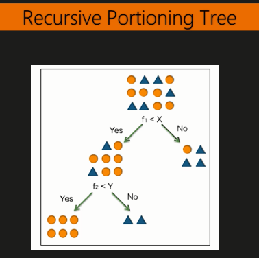

Classification
Jose Parreno Garcia
February 2018
library(knitr)We will look at:
- Recursive partitioning trees
- Conditional inference tree
- K-nearest neighbor
- Logistic regression
- Naive Bayes
1 Preparing the data
library(C50)
data(churn)
str(churnTrain)## 'data.frame': 3333 obs. of 20 variables:
## $ state : Factor w/ 51 levels "AK","AL","AR",..: 17 36 32 36 37 2 20 25 19 50 ...
## $ account_length : int 128 107 137 84 75 118 121 147 117 141 ...
## $ area_code : Factor w/ 3 levels "area_code_408",..: 2 2 2 1 2 3 3 2 1 2 ...
## $ international_plan : Factor w/ 2 levels "no","yes": 1 1 1 2 2 2 1 2 1 2 ...
## $ voice_mail_plan : Factor w/ 2 levels "no","yes": 2 2 1 1 1 1 2 1 1 2 ...
## $ number_vmail_messages : int 25 26 0 0 0 0 24 0 0 37 ...
## $ total_day_minutes : num 265 162 243 299 167 ...
## $ total_day_calls : int 110 123 114 71 113 98 88 79 97 84 ...
## $ total_day_charge : num 45.1 27.5 41.4 50.9 28.3 ...
## $ total_eve_minutes : num 197.4 195.5 121.2 61.9 148.3 ...
## $ total_eve_calls : int 99 103 110 88 122 101 108 94 80 111 ...
## $ total_eve_charge : num 16.78 16.62 10.3 5.26 12.61 ...
## $ total_night_minutes : num 245 254 163 197 187 ...
## $ total_night_calls : int 91 103 104 89 121 118 118 96 90 97 ...
## $ total_night_charge : num 11.01 11.45 7.32 8.86 8.41 ...
## $ total_intl_minutes : num 10 13.7 12.2 6.6 10.1 6.3 7.5 7.1 8.7 11.2 ...
## $ total_intl_calls : int 3 3 5 7 3 6 7 6 4 5 ...
## $ total_intl_charge : num 2.7 3.7 3.29 1.78 2.73 1.7 2.03 1.92 2.35 3.02 ...
## $ number_customer_service_calls: int 1 1 0 2 3 0 3 0 1 0 ...
## $ churn : Factor w/ 2 levels "yes","no": 2 2 2 2 2 2 2 2 2 2 ...# Remove certain variables that we are not going to use
churnTrain = churnTrain[,! names(churnTrain) %in% c("state"
, "area_code"
, "account_length") ]
set.seed(2)
ind = sample(2, nrow(churnTrain), replace = TRUE, prob=c(0.7,0.3))
trainset = churnTrain[ind == 1,]
testset = churnTrain[ind == 2,]
dim(trainset)## [1] 2315 17dim(testset)## [1] 1018 17split.data = function(data, p = 0.7, s = 666){
set.seed(s)
index = sample(1:dim(data)[1])
train = data[index[1:floor(dim(data)[1] * p)], ]
test = data[index[((ceiling(dim(data)[1] * p)) + 1):dim(data)[1]], ]
return(list(train = train, test = test))
}2 Recursive partitioning trees

2.1 Building classification model with recursive partitioning trees
library(rpart)
churn.rp = rpart(churn ~ ., data=trainset)
churn.rp## n= 2315
##
## node), split, n, loss, yval, (yprob)
## * denotes terminal node
##
## 1) root 2315 342 no (0.14773218 0.85226782)
## 2) total_day_minutes>=265.45 144 59 yes (0.59027778 0.40972222)
## 4) voice_mail_plan=no 110 29 yes (0.73636364 0.26363636)
## 8) total_eve_minutes>=188.5 67 3 yes (0.95522388 0.04477612) *
## 9) total_eve_minutes< 188.5 43 17 no (0.39534884 0.60465116)
## 18) total_day_minutes>=282.7 19 6 yes (0.68421053 0.31578947) *
## 19) total_day_minutes< 282.7 24 4 no (0.16666667 0.83333333) *
## 5) voice_mail_plan=yes 34 4 no (0.11764706 0.88235294) *
## 3) total_day_minutes< 265.45 2171 257 no (0.11837863 0.88162137)
## 6) number_customer_service_calls>=3.5 168 82 yes (0.51190476 0.48809524)
## 12) total_day_minutes< 160.2 71 10 yes (0.85915493 0.14084507) *
## 13) total_day_minutes>=160.2 97 25 no (0.25773196 0.74226804)
## 26) total_eve_minutes< 155.5 20 7 yes (0.65000000 0.35000000) *
## 27) total_eve_minutes>=155.5 77 12 no (0.15584416 0.84415584) *
## 7) number_customer_service_calls< 3.5 2003 171 no (0.08537194 0.91462806)
## 14) international_plan=yes 188 76 no (0.40425532 0.59574468)
## 28) total_intl_calls< 2.5 38 0 yes (1.00000000 0.00000000) *
## 29) total_intl_calls>=2.5 150 38 no (0.25333333 0.74666667)
## 58) total_intl_minutes>=13.1 32 0 yes (1.00000000 0.00000000) *
## 59) total_intl_minutes< 13.1 118 6 no (0.05084746 0.94915254) *
## 15) international_plan=no 1815 95 no (0.05234160 0.94765840)
## 30) total_day_minutes>=224.15 251 50 no (0.19920319 0.80079681)
## 60) total_eve_minutes>=259.8 36 10 yes (0.72222222 0.27777778) *
## 61) total_eve_minutes< 259.8 215 24 no (0.11162791 0.88837209) *
## 31) total_day_minutes< 224.15 1564 45 no (0.02877238 0.97122762) *#printcp(churn.rp)
plotcp(churn.rp)summary(churn.rp)## Call:
## rpart(formula = churn ~ ., data = trainset)
## n= 2315
##
## CP nsplit rel error xerror xstd
## 1 0.07602339 0 1.0000000 1.0000000 0.04992005
## 2 0.07456140 2 0.8479532 0.9970760 0.04985964
## 3 0.05555556 4 0.6988304 0.7602339 0.04442127
## 4 0.02631579 7 0.4941520 0.5263158 0.03767329
## 5 0.02339181 8 0.4678363 0.5204678 0.03748096
## 6 0.02046784 10 0.4210526 0.5087719 0.03709209
## 7 0.01754386 11 0.4005848 0.4707602 0.03578773
## 8 0.01000000 12 0.3830409 0.4766082 0.03599261
##
## Variable importance
## total_day_minutes total_day_charge number_customer_service_calls total_intl_minutes total_intl_charge total_eve_charge total_eve_minutes international_plan
## 18 18 10 8 8 8 8 7
## total_intl_calls number_vmail_messages voice_mail_plan total_night_calls total_eve_calls
## 6 3 3 1 1
##
## Node number 1: 2315 observations, complexity param=0.07602339
## predicted class=no expected loss=0.1477322 P(node) =1
## class counts: 342 1973
## probabilities: 0.148 0.852
## left son=2 (144 obs) right son=3 (2171 obs)
## Primary splits:
## total_day_minutes < 265.45 to the right, improve=60.145020, (0 missing)
## total_day_charge < 45.125 to the right, improve=60.145020, (0 missing)
## number_customer_service_calls < 3.5 to the right, improve=53.641430, (0 missing)
## international_plan splits as RL, improve=43.729370, (0 missing)
## voice_mail_plan splits as LR, improve= 6.089388, (0 missing)
## Surrogate splits:
## total_day_charge < 45.125 to the right, agree=1, adj=1, (0 split)
##
## Node number 2: 144 observations, complexity param=0.07602339
## predicted class=yes expected loss=0.4097222 P(node) =0.06220302
## class counts: 85 59
## probabilities: 0.590 0.410
## left son=4 (110 obs) right son=5 (34 obs)
## Primary splits:
## voice_mail_plan splits as LR, improve=19.884860, (0 missing)
## number_vmail_messages < 9.5 to the left, improve=19.884860, (0 missing)
## total_eve_minutes < 167.05 to the right, improve=14.540020, (0 missing)
## total_eve_charge < 14.2 to the right, improve=14.540020, (0 missing)
## total_day_minutes < 283.9 to the right, improve= 6.339827, (0 missing)
## Surrogate splits:
## number_vmail_messages < 9.5 to the left, agree=1.000, adj=1.000, (0 split)
## total_night_minutes < 110.3 to the right, agree=0.785, adj=0.088, (0 split)
## total_night_charge < 4.965 to the right, agree=0.785, adj=0.088, (0 split)
## total_night_calls < 50 to the right, agree=0.778, adj=0.059, (0 split)
## total_intl_minutes < 15.3 to the left, agree=0.771, adj=0.029, (0 split)
##
## Node number 3: 2171 observations, complexity param=0.0745614
## predicted class=no expected loss=0.1183786 P(node) =0.937797
## class counts: 257 1914
## probabilities: 0.118 0.882
## left son=6 (168 obs) right son=7 (2003 obs)
## Primary splits:
## number_customer_service_calls < 3.5 to the right, improve=56.398210, (0 missing)
## international_plan splits as RL, improve=43.059160, (0 missing)
## total_day_minutes < 224.15 to the right, improve=10.847440, (0 missing)
## total_day_charge < 38.105 to the right, improve=10.847440, (0 missing)
## total_intl_minutes < 13.15 to the right, improve= 6.347319, (0 missing)
##
## Node number 4: 110 observations, complexity param=0.02631579
## predicted class=yes expected loss=0.2636364 P(node) =0.0475162
## class counts: 81 29
## probabilities: 0.736 0.264
## left son=8 (67 obs) right son=9 (43 obs)
## Primary splits:
## total_eve_minutes < 188.5 to the right, improve=16.419610, (0 missing)
## total_eve_charge < 16.025 to the right, improve=16.419610, (0 missing)
## total_night_minutes < 206.85 to the right, improve= 5.350500, (0 missing)
## total_night_charge < 9.305 to the right, improve= 5.350500, (0 missing)
## total_day_minutes < 281.15 to the right, improve= 5.254545, (0 missing)
## Surrogate splits:
## total_eve_charge < 16.025 to the right, agree=1.000, adj=1.000, (0 split)
## total_night_calls < 82 to the right, agree=0.655, adj=0.116, (0 split)
## total_intl_minutes < 3.35 to the right, agree=0.636, adj=0.070, (0 split)
## total_intl_charge < 0.905 to the right, agree=0.636, adj=0.070, (0 split)
## total_day_minutes < 268.55 to the right, agree=0.627, adj=0.047, (0 split)
##
## Node number 5: 34 observations
## predicted class=no expected loss=0.1176471 P(node) =0.01468683
## class counts: 4 30
## probabilities: 0.118 0.882
##
## Node number 6: 168 observations, complexity param=0.0745614
## predicted class=yes expected loss=0.4880952 P(node) =0.07257019
## class counts: 86 82
## probabilities: 0.512 0.488
## left son=12 (71 obs) right son=13 (97 obs)
## Primary splits:
## total_day_minutes < 160.2 to the left, improve=29.655880, (0 missing)
## total_day_charge < 27.235 to the left, improve=29.655880, (0 missing)
## total_eve_minutes < 180.65 to the left, improve= 8.556953, (0 missing)
## total_eve_charge < 15.355 to the left, improve= 8.556953, (0 missing)
## number_customer_service_calls < 4.5 to the right, improve= 5.975362, (0 missing)
## Surrogate splits:
## total_day_charge < 27.235 to the left, agree=1.000, adj=1.000, (0 split)
## total_night_calls < 79 to the left, agree=0.625, adj=0.113, (0 split)
## total_intl_calls < 2.5 to the left, agree=0.619, adj=0.099, (0 split)
## number_customer_service_calls < 4.5 to the right, agree=0.607, adj=0.070, (0 split)
## total_eve_calls < 89.5 to the left, agree=0.601, adj=0.056, (0 split)
##
## Node number 7: 2003 observations, complexity param=0.05555556
## predicted class=no expected loss=0.08537194 P(node) =0.8652268
## class counts: 171 1832
## probabilities: 0.085 0.915
## left son=14 (188 obs) right son=15 (1815 obs)
## Primary splits:
## international_plan splits as RL, improve=42.194510, (0 missing)
## total_day_minutes < 224.15 to the right, improve=16.838410, (0 missing)
## total_day_charge < 38.105 to the right, improve=16.838410, (0 missing)
## total_intl_minutes < 13.15 to the right, improve= 6.210678, (0 missing)
## total_intl_charge < 3.55 to the right, improve= 6.210678, (0 missing)
##
## Node number 8: 67 observations
## predicted class=yes expected loss=0.04477612 P(node) =0.02894168
## class counts: 64 3
## probabilities: 0.955 0.045
##
## Node number 9: 43 observations, complexity param=0.02046784
## predicted class=no expected loss=0.3953488 P(node) =0.01857451
## class counts: 17 26
## probabilities: 0.395 0.605
## left son=18 (19 obs) right son=19 (24 obs)
## Primary splits:
## total_day_minutes < 282.7 to the right, improve=5.680947, (0 missing)
## total_day_charge < 48.06 to the right, improve=5.680947, (0 missing)
## total_night_minutes < 212.65 to the right, improve=4.558140, (0 missing)
## total_night_charge < 9.57 to the right, improve=4.558140, (0 missing)
## total_eve_minutes < 145.4 to the right, improve=4.356169, (0 missing)
## Surrogate splits:
## total_day_charge < 48.06 to the right, agree=1.000, adj=1.000, (0 split)
## total_day_calls < 103 to the left, agree=0.674, adj=0.263, (0 split)
## total_eve_calls < 104.5 to the left, agree=0.674, adj=0.263, (0 split)
## total_intl_minutes < 11.55 to the left, agree=0.651, adj=0.211, (0 split)
## total_intl_charge < 3.12 to the left, agree=0.651, adj=0.211, (0 split)
##
## Node number 12: 71 observations
## predicted class=yes expected loss=0.1408451 P(node) =0.03066955
## class counts: 61 10
## probabilities: 0.859 0.141
##
## Node number 13: 97 observations, complexity param=0.01754386
## predicted class=no expected loss=0.257732 P(node) =0.04190065
## class counts: 25 72
## probabilities: 0.258 0.742
## left son=26 (20 obs) right son=27 (77 obs)
## Primary splits:
## total_eve_minutes < 155.5 to the left, improve=7.753662, (0 missing)
## total_eve_charge < 13.22 to the left, improve=7.753662, (0 missing)
## total_intl_minutes < 13.55 to the right, improve=2.366149, (0 missing)
## total_intl_charge < 3.66 to the right, improve=2.366149, (0 missing)
## number_customer_service_calls < 4.5 to the right, improve=2.297667, (0 missing)
## Surrogate splits:
## total_eve_charge < 13.22 to the left, agree=1.000, adj=1.00, (0 split)
## total_night_calls < 143.5 to the right, agree=0.814, adj=0.10, (0 split)
## total_eve_calls < 62 to the left, agree=0.804, adj=0.05, (0 split)
##
## Node number 14: 188 observations, complexity param=0.05555556
## predicted class=no expected loss=0.4042553 P(node) =0.0812095
## class counts: 76 112
## probabilities: 0.404 0.596
## left son=28 (38 obs) right son=29 (150 obs)
## Primary splits:
## total_intl_calls < 2.5 to the left, improve=33.806520, (0 missing)
## total_intl_minutes < 13.1 to the right, improve=30.527050, (0 missing)
## total_intl_charge < 3.535 to the right, improve=30.527050, (0 missing)
## total_day_minutes < 221.95 to the right, improve= 3.386095, (0 missing)
## total_day_charge < 37.735 to the right, improve= 3.386095, (0 missing)
##
## Node number 15: 1815 observations, complexity param=0.02339181
## predicted class=no expected loss=0.0523416 P(node) =0.7840173
## class counts: 95 1720
## probabilities: 0.052 0.948
## left son=30 (251 obs) right son=31 (1564 obs)
## Primary splits:
## total_day_minutes < 224.15 to the right, improve=12.5649300, (0 missing)
## total_day_charge < 38.105 to the right, improve=12.5649300, (0 missing)
## total_eve_minutes < 244.95 to the right, improve= 4.7875890, (0 missing)
## total_eve_charge < 20.825 to the right, improve= 4.7875890, (0 missing)
## total_night_minutes < 163.85 to the right, improve= 0.9074391, (0 missing)
## Surrogate splits:
## total_day_charge < 38.105 to the right, agree=1, adj=1, (0 split)
##
## Node number 18: 19 observations
## predicted class=yes expected loss=0.3157895 P(node) =0.008207343
## class counts: 13 6
## probabilities: 0.684 0.316
##
## Node number 19: 24 observations
## predicted class=no expected loss=0.1666667 P(node) =0.01036717
## class counts: 4 20
## probabilities: 0.167 0.833
##
## Node number 26: 20 observations
## predicted class=yes expected loss=0.35 P(node) =0.008639309
## class counts: 13 7
## probabilities: 0.650 0.350
##
## Node number 27: 77 observations
## predicted class=no expected loss=0.1558442 P(node) =0.03326134
## class counts: 12 65
## probabilities: 0.156 0.844
##
## Node number 28: 38 observations
## predicted class=yes expected loss=0 P(node) =0.01641469
## class counts: 38 0
## probabilities: 1.000 0.000
##
## Node number 29: 150 observations, complexity param=0.05555556
## predicted class=no expected loss=0.2533333 P(node) =0.06479482
## class counts: 38 112
## probabilities: 0.253 0.747
## left son=58 (32 obs) right son=59 (118 obs)
## Primary splits:
## total_intl_minutes < 13.1 to the right, improve=45.356840, (0 missing)
## total_intl_charge < 3.535 to the right, improve=45.356840, (0 missing)
## total_day_calls < 95.5 to the left, improve= 4.036407, (0 missing)
## total_day_minutes < 237.75 to the right, improve= 1.879020, (0 missing)
## total_day_charge < 40.42 to the right, improve= 1.879020, (0 missing)
## Surrogate splits:
## total_intl_charge < 3.535 to the right, agree=1.0, adj=1.000, (0 split)
## total_day_minutes < 52.45 to the left, agree=0.8, adj=0.063, (0 split)
## total_day_charge < 8.92 to the left, agree=0.8, adj=0.063, (0 split)
##
## Node number 30: 251 observations, complexity param=0.02339181
## predicted class=no expected loss=0.1992032 P(node) =0.1084233
## class counts: 50 201
## probabilities: 0.199 0.801
## left son=60 (36 obs) right son=61 (215 obs)
## Primary splits:
## total_eve_minutes < 259.8 to the right, improve=22.993380, (0 missing)
## total_eve_charge < 22.08 to the right, improve=22.993380, (0 missing)
## voice_mail_plan splits as LR, improve= 4.745664, (0 missing)
## number_vmail_messages < 7.5 to the left, improve= 4.745664, (0 missing)
## total_night_minutes < 181.15 to the right, improve= 3.509731, (0 missing)
## Surrogate splits:
## total_eve_charge < 22.08 to the right, agree=1, adj=1, (0 split)
##
## Node number 31: 1564 observations
## predicted class=no expected loss=0.02877238 P(node) =0.675594
## class counts: 45 1519
## probabilities: 0.029 0.971
##
## Node number 58: 32 observations
## predicted class=yes expected loss=0 P(node) =0.01382289
## class counts: 32 0
## probabilities: 1.000 0.000
##
## Node number 59: 118 observations
## predicted class=no expected loss=0.05084746 P(node) =0.05097192
## class counts: 6 112
## probabilities: 0.051 0.949
##
## Node number 60: 36 observations
## predicted class=yes expected loss=0.2777778 P(node) =0.01555076
## class counts: 26 10
## probabilities: 0.722 0.278
##
## Node number 61: 215 observations
## predicted class=no expected loss=0.1116279 P(node) =0.09287257
## class counts: 24 191
## probabilities: 0.112 0.8882.2 Vsualizing a recursive partitioning tree
plot(churn.rp, margin= 0.1)
text(churn.rp, all=TRUE, use.n = TRUE)plot(churn.rp, uniform=TRUE, branch=0.6, margin=0.1)
text(churn.rp, all=TRUE, use.n = TRUE)2.3 Measuring prediction performance
predictions = predict(churn.rp, testset, type="class")
table(testset$churn, predictions)## predictions
## yes no
## yes 100 41
## no 18 859library(caret)
confusionMatrix(table(predictions, testset$churn))## Confusion Matrix and Statistics
##
##
## predictions yes no
## yes 100 18
## no 41 859
##
## Accuracy : 0.942
## 95% CI : (0.9259, 0.9556)
## No Information Rate : 0.8615
## P-Value [Acc > NIR] : < 2.2e-16
##
## Kappa : 0.7393
## Mcnemar's Test P-Value : 0.004181
##
## Sensitivity : 0.70922
## Specificity : 0.97948
## Pos Pred Value : 0.84746
## Neg Pred Value : 0.95444
## Prevalence : 0.13851
## Detection Rate : 0.09823
## Detection Prevalence : 0.11591
## Balanced Accuracy : 0.84435
##
## 'Positive' Class : yes
## 2.4 Pruning a recursive partitioning tree
min(churn.rp$cptable[,"xerror"])## [1] 0.4707602which.min(churn.rp$cptable[,"xerror"])## 7
## 7churn.cp = churn.rp$cptable[7,"CP"]
churn.cp## [1] 0.01754386prune.tree = prune(churn.rp, cp= churn.cp)
plot(prune.tree, margin= 0.1)
text(prune.tree, all=TRUE , use.n=TRUE)predictions = predict(prune.tree, testset, type="class")
table(testset$churn, predictions)## predictions
## yes no
## yes 95 46
## no 14 863confusionMatrix(table(predictions, testset$churn))## Confusion Matrix and Statistics
##
##
## predictions yes no
## yes 95 14
## no 46 863
##
## Accuracy : 0.9411
## 95% CI : (0.9248, 0.9547)
## No Information Rate : 0.8615
## P-Value [Acc > NIR] : 2.786e-16
##
## Kappa : 0.727
## Mcnemar's Test P-Value : 6.279e-05
##
## Sensitivity : 0.67376
## Specificity : 0.98404
## Pos Pred Value : 0.87156
## Neg Pred Value : 0.94939
## Prevalence : 0.13851
## Detection Rate : 0.09332
## Detection Prevalence : 0.10707
## Balanced Accuracy : 0.82890
##
## 'Positive' Class : yes
## 3 Conditional inference tree
3.1 Building classification model with conditional inference tree
library(party)
ctree.model = ctree(churn ~ . , data = trainset)
ctree.model##
## Conditional inference tree with 18 terminal nodes
##
## Response: churn
## Inputs: international_plan, voice_mail_plan, number_vmail_messages, total_day_minutes, total_day_calls, total_day_charge, total_eve_minutes, total_eve_calls, total_eve_charge, total_night_minutes, total_night_calls, total_night_charge, total_intl_minutes, total_intl_calls, total_intl_charge, number_customer_service_calls
## Number of observations: 2315
##
## 1) international_plan == {no}; criterion = 1, statistic = 173.582
## 2) number_customer_service_calls <= 3; criterion = 1, statistic = 133.882
## 3) total_day_minutes <= 259.3; criterion = 1, statistic = 232.371
## 4) total_eve_minutes <= 258.7; criterion = 1, statistic = 39.065
## 5)* weights = 1544
## 4) total_eve_minutes > 258.7
## 6) total_day_minutes <= 222.9; criterion = 1, statistic = 47.453
## 7)* weights = 209
## 6) total_day_minutes > 222.9
## 8) voice_mail_plan == {yes}; criterion = 1, statistic = 20
## 9)* weights = 8
## 8) voice_mail_plan == {no}
## 10)* weights = 28
## 3) total_day_minutes > 259.3
## 11) voice_mail_plan == {no}; criterion = 1, statistic = 46.262
## 12) total_eve_charge <= 14.09; criterion = 1, statistic = 37.877
## 13)* weights = 21
## 12) total_eve_charge > 14.09
## 14) total_night_minutes <= 178.3; criterion = 1, statistic = 19.789
## 15)* weights = 23
## 14) total_night_minutes > 178.3
## 16)* weights = 60
## 11) voice_mail_plan == {yes}
## 17)* weights = 34
## 2) number_customer_service_calls > 3
## 18) total_day_minutes <= 159.4; criterion = 1, statistic = 34.903
## 19) total_eve_minutes <= 233.2; criterion = 0.991, statistic = 11.885
## 20) voice_mail_plan == {no}; criterion = 0.99, statistic = 11.683
## 21)* weights = 40
## 20) voice_mail_plan == {yes}
## 22)* weights = 7
## 19) total_eve_minutes > 233.2
## 23)* weights = 16
## 18) total_day_minutes > 159.4
## 24)* weights = 96
## 1) international_plan == {yes}
## 25) total_intl_charge <= 3.51; criterion = 1, statistic = 35.28
## 26) total_intl_calls <= 2; criterion = 1, statistic = 28.013
## 27)* weights = 40
## 26) total_intl_calls > 2
## 28) number_customer_service_calls <= 3; criterion = 0.957, statistic = 8.954
## 29) total_day_minutes <= 271.5; criterion = 1, statistic = 25.328
## 30) total_eve_charge <= 25.82; criterion = 0.987, statistic = 11.167
## 31)* weights = 116
## 30) total_eve_charge > 25.82
## 32)* weights = 7
## 29) total_day_minutes > 271.5
## 33)* weights = 11
## 28) number_customer_service_calls > 3
## 34)* weights = 14
## 25) total_intl_charge > 3.51
## 35)* weights = 413.2 Plotting the tree
plot(ctree.model)daycharge.model = ctree(churn ~ total_day_charge, data = trainset)
plot(daycharge.model)
3.3 Measuring the performance
ctree.predict = predict(ctree.model ,testset)
table(ctree.predict, testset$churn)##
## ctree.predict yes no
## yes 99 15
## no 42 862confusionMatrix(table(ctree.predict, testset$churn))## Confusion Matrix and Statistics
##
##
## ctree.predict yes no
## yes 99 15
## no 42 862
##
## Accuracy : 0.944
## 95% CI : (0.9281, 0.9573)
## No Information Rate : 0.8615
## P-Value [Acc > NIR] : < 2.2e-16
##
## Kappa : 0.7449
## Mcnemar's Test P-Value : 0.0005736
##
## Sensitivity : 0.70213
## Specificity : 0.98290
## Pos Pred Value : 0.86842
## Neg Pred Value : 0.95354
## Prevalence : 0.13851
## Detection Rate : 0.09725
## Detection Prevalence : 0.11198
## Balanced Accuracy : 0.84251
##
## 'Positive' Class : yes
## tr = treeresponse(ctree.model, newdata = testset[1:5,])
tr## [[1]]
## [1] 0.03497409 0.96502591
##
## [[2]]
## [1] 0.02586207 0.97413793
##
## [[3]]
## [1] 0.02586207 0.97413793
##
## [[4]]
## [1] 0.02586207 0.97413793
##
## [[5]]
## [1] 0.03497409 0.965025914 K-nearest neighbor
4.1 Building classification model with knn
library(class)
levels(trainset$international_plan) = list("0"="no", "1"="yes")
levels(trainset$voice_mail_plan) = list("0"="no", "1"="yes")
levels(testset$international_plan) = list("0"="no", "1"="yes")
levels(testset$voice_mail_plan) = list("0"="no", "1"="yes")
churn.knn = knn(trainset[,! names(trainset) %in% c("churn")],
testset[,! names(testset) %in% c("churn")], trainset$churn, k=3)
summary(churn.knn)## yes no
## 77 941table(testset$churn, churn.knn)## churn.knn
## yes no
## yes 44 97
## no 33 844confusionMatrix(table(testset$churn, churn.knn))## Confusion Matrix and Statistics
##
## churn.knn
## yes no
## yes 44 97
## no 33 844
##
## Accuracy : 0.8723
## 95% CI : (0.8502, 0.8922)
## No Information Rate : 0.9244
## P-Value [Acc > NIR] : 1
##
## Kappa : 0.339
## Mcnemar's Test P-Value : 3.286e-08
##
## Sensitivity : 0.57143
## Specificity : 0.89692
## Pos Pred Value : 0.31206
## Neg Pred Value : 0.96237
## Prevalence : 0.07564
## Detection Rate : 0.04322
## Detection Prevalence : 0.13851
## Balanced Accuracy : 0.73417
##
## 'Positive' Class : yes
## 5 Logistic regression
fit = glm(churn ~ ., data = trainset, family=binomial)
summary(fit)##
## Call:
## glm(formula = churn ~ ., family = binomial, data = trainset)
##
## Deviance Residuals:
## Min 1Q Median 3Q Max
## -3.1519 0.1983 0.3460 0.5186 2.1284
##
## Coefficients:
## Estimate Std. Error z value Pr(>|z|)
## (Intercept) 8.3462866 0.8364914 9.978 < 2e-16 ***
## international_plan1 -2.0534243 0.1726694 -11.892 < 2e-16 ***
## voice_mail_plan1 1.3445887 0.6618905 2.031 0.042211 *
## number_vmail_messages -0.0155101 0.0209220 -0.741 0.458496
## total_day_minutes 0.2398946 3.9168466 0.061 0.951163
## total_day_calls -0.0014003 0.0032769 -0.427 0.669141
## total_day_charge -1.4855284 23.0402950 -0.064 0.948592
## total_eve_minutes 0.3600678 1.9349825 0.186 0.852379
## total_eve_calls -0.0028484 0.0033061 -0.862 0.388928
## total_eve_charge -4.3204432 22.7644698 -0.190 0.849475
## total_night_minutes 0.4431210 1.0478105 0.423 0.672367
## total_night_calls 0.0003978 0.0033188 0.120 0.904588
## total_night_charge -9.9162795 23.2836376 -0.426 0.670188
## total_intl_minutes 0.4587114 6.3524560 0.072 0.942435
## total_intl_calls 0.1065264 0.0304318 3.500 0.000464 ***
## total_intl_charge -2.0803428 23.5262100 -0.088 0.929538
## number_customer_service_calls -0.5109077 0.0476289 -10.727 < 2e-16 ***
## ---
## Signif. codes: 0 '***' 0.001 '**' 0.01 '*' 0.05 '.' 0.1 ' ' 1
##
## (Dispersion parameter for binomial family taken to be 1)
##
## Null deviance: 1938.8 on 2314 degrees of freedom
## Residual deviance: 1515.3 on 2298 degrees of freedom
## AIC: 1549.3
##
## Number of Fisher Scoring iterations: 6fit = glm(churn ~ international_plan + voice_mail_plan+total_intl_calls+
number_customer_service_calls,data = trainset, family=binomial)
summary(fit)##
## Call:
## glm(formula = churn ~ international_plan + voice_mail_plan +
## total_intl_calls + number_customer_service_calls, family = binomial,
## data = trainset)
##
## Deviance Residuals:
## Min 1Q Median 3Q Max
## -2.7308 0.3103 0.4196 0.5381 1.6716
##
## Coefficients:
## Estimate Std. Error z value Pr(>|z|)
## (Intercept) 2.32304 0.16770 13.852 < 2e-16 ***
## international_plan1 -2.00346 0.16096 -12.447 < 2e-16 ***
## voice_mail_plan1 0.79228 0.16380 4.837 1.32e-06 ***
## total_intl_calls 0.08414 0.02862 2.939 0.00329 **
## number_customer_service_calls -0.44227 0.04451 -9.937 < 2e-16 ***
## ---
## Signif. codes: 0 '***' 0.001 '**' 0.01 '*' 0.05 '.' 0.1 ' ' 1
##
## (Dispersion parameter for binomial family taken to be 1)
##
## Null deviance: 1938.8 on 2314 degrees of freedom
## Residual deviance: 1669.4 on 2310 degrees of freedom
## AIC: 1679.4
##
## Number of Fisher Scoring iterations: 5pred = predict(fit,testset, type="response")
Class = pred >.5
summary(Class)## Mode FALSE TRUE
## logical 29 989tb = table(testset$churn,Class)
tb## Class
## FALSE TRUE
## yes 18 123
## no 11 866churn.mod = ifelse(testset$churn == "yes", 1, 0)
pred_class = churn.mod
pred_class[pred<=.5] = 1- pred_class[pred<=.5]
ctb = table(churn.mod, pred_class)
ctb## pred_class
## churn.mod 0 1
## 0 866 11
## 1 18 123confusionMatrix(ctb)## Confusion Matrix and Statistics
##
## pred_class
## churn.mod 0 1
## 0 866 11
## 1 18 123
##
## Accuracy : 0.9715
## 95% CI : (0.9593, 0.9808)
## No Information Rate : 0.8684
## P-Value [Acc > NIR] : <2e-16
##
## Kappa : 0.8781
## Mcnemar's Test P-Value : 0.2652
##
## Sensitivity : 0.9796
## Specificity : 0.9179
## Pos Pred Value : 0.9875
## Neg Pred Value : 0.8723
## Prevalence : 0.8684
## Detection Rate : 0.8507
## Detection Prevalence : 0.8615
## Balanced Accuracy : 0.9488
##
## 'Positive' Class : 0
## 6 Naive Bayes
library(e1071)
classifier=naiveBayes(trainset[, !names(trainset) %in%
c("churn")], trainset$churn)
classifier##
## Naive Bayes Classifier for Discrete Predictors
##
## Call:
## naiveBayes.default(x = trainset[, !names(trainset) %in% c("churn")],
## y = trainset$churn)
##
## A-priori probabilities:
## trainset$churn
## yes no
## 0.1477322 0.8522678
##
## Conditional probabilities:
## international_plan
## trainset$churn 0 1
## yes 0.70467836 0.29532164
## no 0.93512418 0.06487582
##
## voice_mail_plan
## trainset$churn 0 1
## yes 0.8333333 0.1666667
## no 0.7045109 0.2954891
##
## number_vmail_messages
## trainset$churn [,1] [,2]
## yes 5.099415 11.80618
## no 8.674607 14.03670
##
## total_day_minutes
## trainset$churn [,1] [,2]
## yes 205.8877 69.10294
## no 174.2555 50.16357
##
## total_day_calls
## trainset$churn [,1] [,2]
## yes 101.0234 22.02903
## no 100.5509 19.67038
##
## total_day_charge
## trainset$churn [,1] [,2]
## yes 35.00143 11.747587
## no 29.62402 8.527769
##
## total_eve_minutes
## trainset$churn [,1] [,2]
## yes 213.7269 51.92206
## no 199.6197 50.53780
##
## total_eve_calls
## trainset$churn [,1] [,2]
## yes 101.4123 19.48658
## no 99.9478 20.16161
##
## total_eve_charge
## trainset$churn [,1] [,2]
## yes 18.16702 4.413058
## no 16.96789 4.295730
##
## total_night_minutes
## trainset$churn [,1] [,2]
## yes 205.4640 47.11434
## no 201.4184 51.34049
##
## total_night_calls
## trainset$churn [,1] [,2]
## yes 100.2573 20.32690
## no 100.0193 19.68094
##
## total_night_charge
## trainset$churn [,1] [,2]
## yes 9.245994 2.12038
## no 9.063882 2.31040
##
## total_intl_minutes
## trainset$churn [,1] [,2]
## yes 10.73684 2.752784
## no 10.15119 2.819086
##
## total_intl_calls
## trainset$churn [,1] [,2]
## yes 4.134503 2.487395
## no 4.514445 2.394724
##
## total_intl_charge
## trainset$churn [,1] [,2]
## yes 2.899386 0.7432760
## no 2.741343 0.7611755
##
## number_customer_service_calls
## trainset$churn [,1] [,2]
## yes 2.204678 1.808803
## no 1.441460 1.150114bayes.table = table(predict(classifier, testset[,!names(testset) %in%
c("churn")]), testset$churn)
bayes.table##
## yes no
## yes 68 45
## no 73 832confusionMatrix(bayes.table)## Confusion Matrix and Statistics
##
##
## yes no
## yes 68 45
## no 73 832
##
## Accuracy : 0.8841
## 95% CI : (0.8628, 0.9031)
## No Information Rate : 0.8615
## P-Value [Acc > NIR] : 0.01880
##
## Kappa : 0.4701
## Mcnemar's Test P-Value : 0.01294
##
## Sensitivity : 0.4823
## Specificity : 0.9487
## Pos Pred Value : 0.6018
## Neg Pred Value : 0.9193
## Prevalence : 0.1385
## Detection Rate : 0.0668
## Detection Prevalence : 0.1110
## Balanced Accuracy : 0.7155
##
## 'Positive' Class : yes
##